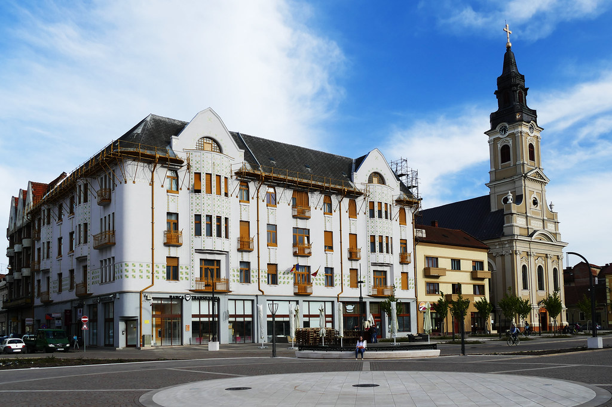

Palatul Moskovits Adolf și Fii
Descriere
Palatul Moskovits Adolf și fii, denumit și Palatul Moskovits II, este o clădire în stil secession și cuprinde trei etaje, un parter, un subsol, un acoperiș înalt cu fațada netedă și un număr redus de ornamente dar bine proporționate.
Faţada reprezintă o adevărată marcă de stil a arhitecţilor Vágo Laszlo şi Vágo Jozsef, construită în acelaşi stil de tratare a suprafeţei ca şi Casa Guttenberg din Budapesta.